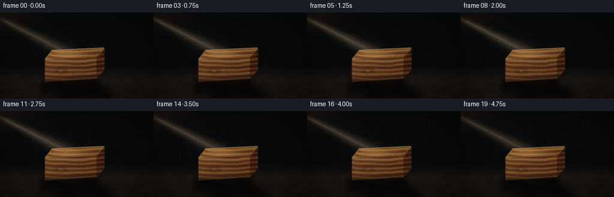
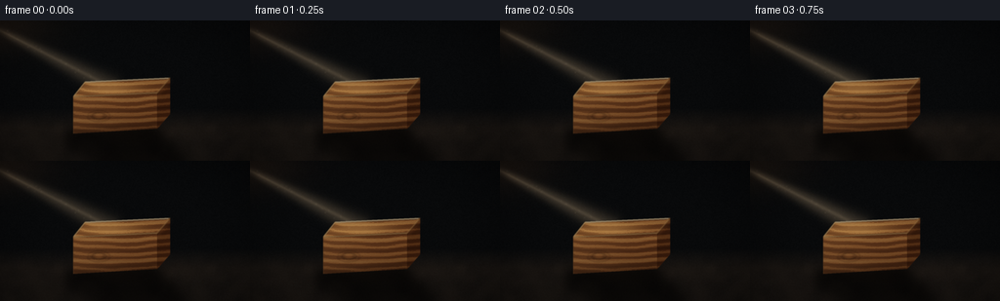
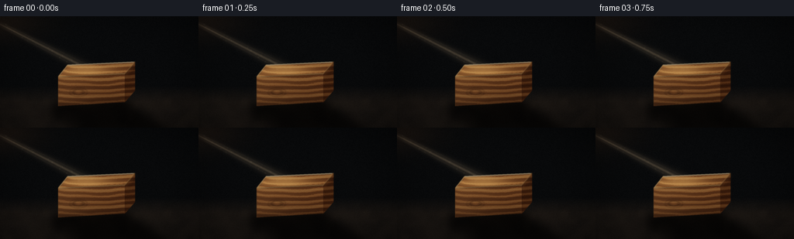
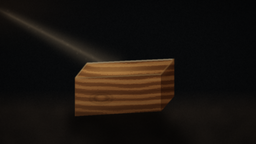
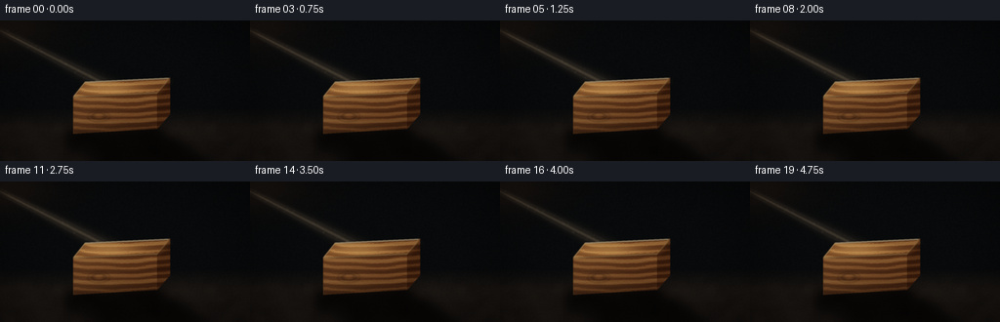
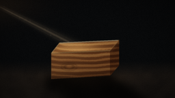

CODING AGENTS AS PIXEL WORLD MODELS
traex/DeepSeek-V4.1-Flash · phygen_041
点击播放 · 原生 RGB 像素
逐轮保存的候选
回放视频、检查图与代码变化。
每份候选均可单独播放。实际图片检查记录在下方工具轨迹中。
候选 01播放与检查图
点击播放 · 原生 RGB 像素


展开代码变化
--- 上一保存版本
+++ 本次保存版本
@@ -0,0 +1,220 @@
+from pathlib import Path
+
+import numpy as np
+from PIL import Image, ImageDraw, ImageFilter
+from scipy.ndimage import gaussian_filter
+
+import artifact_io
+
+
+W, H, N, FPS = 256, 144, 20, 4.0
+S = 4
+WS, HS = W * S, H * S
+ROOT = Path(__file__).resolve().parent
+
+
+def smooth_noise(shape, sigma, rng):
+ noise = rng.normal(0.0, 1.0, shape).astype(np.float32)
+ noise = gaussian_filter(noise, sigma=sigma, mode="reflect")
+ lo, hi = np.percentile(noise, [2.0, 98.0])
+ return np.clip((noise - lo) / max(hi - lo, 1e-6), 0.0, 1.0)
+
+
+def mask_from_polygon(points, blur=0.0):
+ image = Image.new("L", (WS, HS), 0)
+ draw = ImageDraw.Draw(image)
+ draw.polygon([(x * S, y * S) for x, y in points], fill=255)
+ if blur:
+ image = image.filter(ImageFilter.GaussianBlur(blur * S))
+ return np.asarray(image, dtype=np.float32) / 255.0
+
+
+def blend(image, color, alpha):
+ color = np.asarray(color, dtype=np.float32)
+ return image * (1.0 - alpha[..., None]) + color * alpha[..., None]
+
+
+def add_light(image, color, intensity):
+ color = np.asarray(color, dtype=np.float32)
+ return image + color * intensity[..., None]
+
+
+def draw_soft_line(draw, points, fill, width, blur):
+ layer = Image.new("RGBA", (WS, HS), (0, 0, 0, 0))
+ local = ImageDraw.Draw(layer)
+ local.line([(x * S, y * S) for x, y in points], fill=fill, width=width * S, joint="curve")
+ layer = layer.filter(ImageFilter.GaussianBlur(blur * S))
+ return layer
+
+
+def wood_texture(xx, yy, face_seed):
+ # Long, gently wandering grain lines. The coordinate scales are in
+ # supersampled pixels so the grain stays delicate after downsampling.
+ rng = np.random.default_rng(face_seed)
+ warp = smooth_noise((HS, WS), 34.0, rng) - 0.5
+ fine = smooth_noise((HS, WS), 2.0, rng) - 0.5
+ q = yy + 9.0 * warp + 3.2 * np.sin(xx * 0.008 + yy * 0.002)
+ rings = np.sin(q * 0.205 + 1.15 * np.sin(xx * 0.010))
+ rings2 = np.sin(q * 0.078 + xx * 0.0017 + 0.8)
+ fibers = np.sin(yy * 0.53 + xx * 0.014 + 3.0 * fine)
+ tone = 0.55 + 0.23 * rings + 0.12 * rings2 + 0.05 * fibers
+ tone = np.clip(tone, 0.0, 1.0)
+
+ dark = np.array([62.0, 31.0, 16.0], dtype=np.float32)
+ mid = np.array([139.0, 78.0, 38.0], dtype=np.float32)
+ pale = np.array([191.0, 126.0, 67.0], dtype=np.float32)
+ lo = dark + (mid - dark) * tone[..., None]
+ hi = mid + (pale - mid) * np.clip((tone - 0.58) / 0.42, 0.0, 1.0)[..., None]
+ return np.where(tone[..., None] < 0.58, lo, hi)
+
+
+def render_frame(frame_index):
+ t = frame_index / FPS
+ yy, xx = np.mgrid[0:HS, 0:WS].astype(np.float32)
+ xn, yn = xx / WS, yy / HS
+ rng = np.random.default_rng(814 + frame_index)
+
+ # Near-black room with a warm bounce around the incoming light.
+ image = np.zeros((HS, WS, 3), dtype=np.float32)
+ image[:] = np.array([8.0, 9.0, 10.0], dtype=np.float32)
+ source_glow = np.exp(-(((xn + 0.04) / 0.30) ** 2 + ((yn - 0.03) / 0.23) ** 2) * 1.7)
+ image = add_light(image, [43.0, 27.0, 15.0], source_glow * 0.50)
+
+ # A very dark matte floor gives the cast shadow somewhere to live.
+ horizon = 0.625
+ floor_amount = np.clip((yn - horizon) / (1.0 - horizon), 0.0, 1.0)
+ floor_texture = smooth_noise((HS, WS), 18.0, np.random.default_rng(72))
+ floor_color = np.array([22.0, 18.0, 15.0], dtype=np.float32)
+ floor_color = floor_color[None, None, :] + floor_texture[..., None] * np.array([7.0, 5.5, 4.0])
+ floor_alpha = np.clip(floor_amount * 2.7, 0.0, 1.0)
+ image = image * (1.0 - floor_alpha[..., None] * 0.88) + floor_color * (floor_alpha[..., None] * 0.88)
+
+ # Fine wall grain prevents the dark areas from looking like flat vectors.
+ wall_noise = smooth_noise((HS, WS), 1.3, np.random.default_rng(19))
+ image += (wall_noise[..., None] - 0.5) * 3.0
+
+ # Soft pool of spill light on the floor, just under the illuminated block.
+ spill = np.exp(-(((xn - 0.49) / 0.20) ** 2 + ((yn - 0.80) / 0.095) ** 2) * 1.9)
+ spill *= np.clip((yn - 0.62) / 0.15, 0.0, 1.0)
+ image = add_light(image, [57.0, 35.0, 18.0], spill * 0.18)
+
+ # Cast shadow is projected down and to the right by the upper-left light.
+ shadow_poly = [(66, 113), (156, 108), (197, 143), (111, 149), (66, 132)]
+ shadow_mask = mask_from_polygon(shadow_poly, blur=5.2)
+ shadow_core = mask_from_polygon([(78, 112), (157, 108), (181, 134), (111, 139)], blur=3.0)
+ image *= (1.0 - 0.57 * shadow_mask[..., None])
+ image *= (1.0 - 0.18 * shadow_core[..., None])
+
+ # Volumetric shaft: broad haze plus a brighter core, sourced off-frame.
+ beam_start = np.array([-12.0, 4.0], dtype=np.float32)
+ beam_end = np.array([123.0 + 0.55 * np.sin(t * 0.9), 73.0], dtype=np.float32)
+ beam_vec = beam_end - beam_start
+ beam_len2 = float(np.dot(beam_vec, beam_vec))
+ px, py = xn * W, yn * H
+ relx, rely = px - beam_start[0], py - beam_start[1]
+ along = np.clip((relx * beam_vec[0] + rely * beam_vec[1]) / beam_len2, 0.0, 1.0)
+ perp = np.abs(relx * beam_vec[1] - rely * beam_vec[0]) / np.sqrt(beam_len2)
+ width = 4.0 + 13.0 * along
+ edge = np.exp(-((perp / width) ** 2) * 2.3)
+ travel_fade = np.clip((along - 0.01) / 0.16, 0.0, 1.0) * (1.0 - np.clip((along - 0.93) / 0.07, 0.0, 1.0))
+ pulse = 1.0 + 0.035 * np.sin(t * 1.35)
+ haze = edge * travel_fade * (0.17 + 0.045 * np.sin(t * 0.7)) * pulse
+ core = np.exp(-((perp / (1.5 + 2.7 * along)) ** 2) * 3.2) * travel_fade * 0.075 * pulse
+ image = add_light(image, [255.0, 211.0, 154.0], haze + core)
+
+ # Wood texture and three shaded faces of the block.
+ top_poly = [(87, 63), (174, 59), (161, 74), (75, 78)]
+ front_poly = [(75, 78), (161, 74), (161, 111), (75, 116)]
+ side_poly = [(161, 74), (174, 59), (174, 96), (161, 111)]
+
+ top_mask = mask_from_polygon(top_poly, blur=0.32)
+ front_mask = mask_from_polygon(front_poly, blur=0.32)
+ side_mask = mask_from_polygon(side_poly, blur=0.32)
+
+ top_wood = wood_texture(xx, yy, 23) * np.array([1.13, 1.08, 1.00], dtype=np.float32)
+ front_wood = wood_texture(xx, yy, 61) * np.array([0.89, 0.82, 0.75], dtype=np.float32)
+ side_wood = wood_texture(xx, yy, 97) * np.array([0.53, 0.45, 0.38], dtype=np.float32)
+
+ # Directional falloff and a focused warm pool where the beam meets the top.
+ top_light = (1.02 - 0.25 * np.clip((xx / WS - 0.34) / 0.50, 0.0, 1.0))
+ top_hit = np.exp(-(((xx / WS - 0.43) / 0.18) ** 2 + ((yy / HS - 0.49) / 0.055) ** 2) * 1.8)
+ top_wood *= top_light[..., None]
+ top_wood += np.array([92.0, 62.0, 30.0]) * top_hit[..., None] * pulse
+ front_wood *= (0.72 + 0.27 * np.clip((0.80 - yn) / 0.25, 0.0, 1.0))[..., None]
+ front_wood += np.array([24.0, 16.0, 9.0]) * np.exp(-(((xn - 0.31) / 0.21) ** 2))[..., None]
+
+ # One restrained knot on the front face keeps the wood from reading as noise.
+ knot_dx = (xx / S - 101.0) / 12.0
+ knot_dy = (yy / S - 98.0) / 6.0
+ knot_r = np.sqrt(knot_dx ** 2 + knot_dy ** 2)
+ knot_ring = np.exp(-((knot_r - 0.55) / 0.19) ** 2) + 0.55 * np.exp(-((knot_r - 0.95) / 0.13) ** 2)
+ knot_center = np.exp(-(knot_r / 0.31) ** 2)
+ front_wood *= (1.0 - 0.24 * knot_ring[..., None] * front_mask[..., None])
+ front_wood += np.array([46.0, 25.0, 10.0]) * knot_center[..., None] * 0.32
+
+ for mask, face in ((top_mask, top_wood), (front_mask, front_wood), (side_mask, side_wood)):
+ image = image * (1.0 - mask[..., None]) + face * mask[..., None]
+
+ # Ambient occlusion where the block meets the floor.
+ contact = mask_from_polygon([(69, 112), (163, 107), (168, 116), (72, 122)], blur=4.5)
+ image *= (1.0 - 0.34 * contact[..., None])
+
+ # Chamfered, light-catching edges are the main cue that this is solid wood.
+ edge_layer = Image.new("RGBA", (WS, HS), (0, 0, 0, 0))
+ edge_draw = ImageDraw.Draw(edge_layer)
+ edge_draw.line([(87 * S, 63 * S), (174 * S, 59 * S)], fill=(255, 224, 166, 150), width=2 * S)
+ edge_draw.line([(87 * S, 63 * S), (75 * S, 78 * S)], fill=(238, 188, 116, 112), width=2 * S)
+ edge_draw.line([(75 * S, 78 * S), (161 * S, 74 * S)], fill=(236, 181, 105, 88), width=2 * S)
+ edge_draw.line([(161 * S, 74 * S), (174 * S, 59 * S)], fill=(210, 143, 74, 78), width=2 * S)
+ edge_draw.line([(75 * S, 78 * S), (75 * S, 116 * S)], fill=(171, 103, 51, 72), width=1 * S)
+ edge_layer = edge_layer.filter(ImageFilter.GaussianBlur(0.42 * S))
+ edge_rgb = np.asarray(edge_layer, dtype=np.float32)[..., :3]
+ edge_alpha = np.asarray(edge_layer, dtype=np.float32)[..., 3:4] / 255.0
+ image = image * (1.0 - edge_alpha) + edge_rgb * edge_alpha
+
+ # Very soft reflected warmth on the right face.
+ rim = mask_from_polygon([(161, 74), (174, 59), (174, 63), (161, 79)], blur=1.5)
+ image = add_light(image, [80.0, 47.0, 23.0], rim * 0.23)
+
+ # Animated motes make the beam feel volumetric without competing with the subject.
+ dust_layer = Image.new("RGBA", (WS, HS), (0, 0, 0, 0))
+ dust_draw = ImageDraw.Draw(dust_layer)
+ dust_rng = np.random.default_rng(330)
+ for i in range(46):
+ base_t = dust_rng.uniform(0.08, 0.91)
+ lateral = dust_rng.uniform(-0.82, 0.82)
+ width_i = 3.0 + 10.0 * base_t
+ bx = beam_start[0] + beam_vec[0] * base_t + lateral * width_i
+ by = beam_start[1] + beam_vec[1] * base_t + dust_rng.uniform(-3.0, 3.0)
+ drift_x = 1.7 * np.sin(t * (0.35 + 0.05 * (i % 5)) + i * 1.73)
+ drift_y = 1.0 * np.cos(t * (0.28 + 0.04 * (i % 7)) + i * 0.91)
+ x, y = (bx + drift_x) * S, (by + drift_y) * S
+ radius = dust_rng.uniform(0.32, 0.95) * S
+ alpha = int(dust_rng.uniform(24, 90) * (0.35 + 0.65 * (1.0 - abs(lateral))))
+ dust_draw.ellipse((x - radius, y - radius, x + radius, y + radius), fill=(255, 224, 178, alpha))
+ dust_layer = dust_layer.filter(ImageFilter.GaussianBlur(0.7 * S))
+ dust_rgb = np.asarray(dust_layer, dtype=np.float32)[..., :3]
+ dust_alpha = np.asarray(dust_layer, dtype=np.float32)[..., 3:4] / 255.0
+ image += dust_rgb * dust_alpha * 0.52
+
+ # Gentle vignette and filmic shoulder.
+ vignette = np.clip(1.10 - 0.60 * (((xn - 0.5) / 0.72) ** 2 + ((yn - 0.50) / 0.80) ** 2), 0.30, 1.0)
+ image *= vignette[..., None]
+ grain = (smooth_noise((HS, WS), 0.55, rng) - 0.5) * 2.6
+ image += grain[..., None]
+ image = np.maximum(image, 0.0)
+ image = 255.0 * (1.0 - np.exp(-image / 230.0))
+ image = np.clip(image, 0.0, 255.0).astype(np.uint8)
+
+ frame = Image.fromarray(image, mode="RGB").resize((W, H), Image.Resampling.LANCZOS)
+ return np.asarray(frame, dtype=np.uint8)
+
+
+def main():
+ frames = np.stack([render_frame(i) for i in range(N)])
+ artifact_io.save(frames, ROOT)
+ print(f"saved {frames.shape} RGB frames to {ROOT}")
+
+
+if __name__ == "__main__":
+ main()
候选 02播放与检查图
点击播放 · 原生 RGB 像素


展开代码变化
--- 上一保存版本
+++ 本次保存版本
@@ -99,11 +99,11 @@
image = add_light(image, [57.0, 35.0, 18.0], spill * 0.18)
# Cast shadow is projected down and to the right by the upper-left light.
- shadow_poly = [(66, 113), (156, 108), (197, 143), (111, 149), (66, 132)]
- shadow_mask = mask_from_polygon(shadow_poly, blur=5.2)
- shadow_core = mask_from_polygon([(78, 112), (157, 108), (181, 134), (111, 139)], blur=3.0)
- image *= (1.0 - 0.57 * shadow_mask[..., None])
- image *= (1.0 - 0.18 * shadow_core[..., None])
+ shadow_poly = [(65, 113), (157, 108), (218, 144), (111, 149), (65, 131)]
+ shadow_mask = mask_from_polygon(shadow_poly, blur=5.6)
+ shadow_core = mask_from_polygon([(76, 112), (159, 108), (194, 139), (111, 141)], blur=3.6)
+ image *= (1.0 - 0.66 * shadow_mask[..., None])
+ image *= (1.0 - 0.22 * shadow_core[..., None])
# Volumetric shaft: broad haze plus a brighter core, sourced off-frame.
beam_start = np.array([-12.0, 4.0], dtype=np.float32)
@@ -114,13 +114,18 @@
relx, rely = px - beam_start[0], py - beam_start[1]
along = np.clip((relx * beam_vec[0] + rely * beam_vec[1]) / beam_len2, 0.0, 1.0)
perp = np.abs(relx * beam_vec[1] - rely * beam_vec[0]) / np.sqrt(beam_len2)
- width = 4.0 + 13.0 * along
- edge = np.exp(-((perp / width) ** 2) * 2.3)
+ width = 3.2 + 10.5 * along
+ edge = np.exp(-((perp / width) ** 2) * 3.0)
travel_fade = np.clip((along - 0.01) / 0.16, 0.0, 1.0) * (1.0 - np.clip((along - 0.93) / 0.07, 0.0, 1.0))
pulse = 1.0 + 0.035 * np.sin(t * 1.35)
- haze = edge * travel_fade * (0.17 + 0.045 * np.sin(t * 0.7)) * pulse
- core = np.exp(-((perp / (1.5 + 2.7 * along)) ** 2) * 3.2) * travel_fade * 0.075 * pulse
+ haze = edge * travel_fade * (0.095 + 0.022 * np.sin(t * 0.7)) * pulse
+ core = np.exp(-((perp / (1.15 + 2.0 * along)) ** 2) * 3.5) * travel_fade * 0.115 * pulse
image = add_light(image, [255.0, 211.0, 154.0], haze + core)
+
+ # Two faint internal streaks make the diagonal shaft read as light in air.
+ streak_a = np.exp(-((perp - (2.5 + 2.0 * along)) / 0.85) ** 2) * travel_fade
+ streak_b = np.exp(-((perp + (3.0 + 1.5 * along)) / 1.1) ** 2) * travel_fade
+ image = add_light(image, [255.0, 216.0, 164.0], (streak_a * 0.020 + streak_b * 0.014) * pulse)
# Wood texture and three shaded faces of the block.
top_poly = [(87, 63), (174, 59), (161, 74), (75, 78)]
@@ -136,10 +141,10 @@
side_wood = wood_texture(xx, yy, 97) * np.array([0.53, 0.45, 0.38], dtype=np.float32)
# Directional falloff and a focused warm pool where the beam meets the top.
- top_light = (1.02 - 0.25 * np.clip((xx / WS - 0.34) / 0.50, 0.0, 1.0))
+ top_light = (1.13 - 0.28 * np.clip((xx / WS - 0.34) / 0.50, 0.0, 1.0))
top_hit = np.exp(-(((xx / WS - 0.43) / 0.18) ** 2 + ((yy / HS - 0.49) / 0.055) ** 2) * 1.8)
top_wood *= top_light[..., None]
- top_wood += np.array([92.0, 62.0, 30.0]) * top_hit[..., None] * pulse
+ top_wood += np.array([126.0, 82.0, 39.0]) * top_hit[..., None] * pulse
front_wood *= (0.72 + 0.27 * np.clip((0.80 - yn) / 0.25, 0.0, 1.0))[..., None]
front_wood += np.array([24.0, 16.0, 9.0]) * np.exp(-(((xn - 0.31) / 0.21) ** 2))[..., None]
候选 03播放与检查图
点击播放 · 原生 RGB 像素

展开代码变化
--- 上一保存版本
+++ 本次保存版本
@@ -94,15 +94,15 @@
image += (wall_noise[..., None] - 0.5) * 3.0
# Soft pool of spill light on the floor, just under the illuminated block.
- spill = np.exp(-(((xn - 0.49) / 0.20) ** 2 + ((yn - 0.80) / 0.095) ** 2) * 1.9)
+ spill = np.exp(-(((xn - 0.49) / 0.24) ** 2 + ((yn - 0.81) / 0.115) ** 2) * 1.8)
spill *= np.clip((yn - 0.62) / 0.15, 0.0, 1.0)
- image = add_light(image, [57.0, 35.0, 18.0], spill * 0.18)
+ image = add_light(image, [72.0, 46.0, 24.0], spill * 0.42)
# Cast shadow is projected down and to the right by the upper-left light.
shadow_poly = [(65, 113), (157, 108), (218, 144), (111, 149), (65, 131)]
shadow_mask = mask_from_polygon(shadow_poly, blur=5.6)
shadow_core = mask_from_polygon([(76, 112), (159, 108), (194, 139), (111, 141)], blur=3.6)
- image *= (1.0 - 0.66 * shadow_mask[..., None])
+ image *= (1.0 - 0.73 * shadow_mask[..., None])
image *= (1.0 - 0.22 * shadow_core[..., None])
# Volumetric shaft: broad haze plus a brighter core, sourced off-frame.
@@ -211,7 +211,7 @@
image = 255.0 * (1.0 - np.exp(-image / 230.0))
image = np.clip(image, 0.0, 255.0).astype(np.uint8)
- frame = Image.fromarray(image, mode="RGB").resize((W, H), Image.Resampling.LANCZOS)
+ frame = Image.fromarray(image).resize((W, H), Image.Resampling.LANCZOS)
return np.asarray(frame, dtype=np.uint8)
候选 04播放与检查图
可观测工具轨迹
实际执行的命令与返回图片。
命令 1exit 0
/bin/bash -c "pwd && rg --files -g 'prompt.txt' -g 'GENERATION_RULES.md' -g 'task_spec.json' -g '"'!node_modules'"' -g '"'!vendor'"'"
命令 2exit 0
/bin/bash -c 'ls -la'
命令 3exit 0
/bin/bash -c 'cat prompt.txt'
命令 4exit 0
/bin/bash -c 'cat GENERATION_RULES.md'
命令 5exit 0
/bin/bash -c 'cat task_spec.json'
命令 6exit 0
/bin/bash -c "sed -n '1,240p' artifact_io.py"
命令 7exit 0
/bin/bash -c "sed -n '1,260p' player_template.html"
命令 8exit 0
/bin/bash -c "python - <<'PY'
import numpy, PIL
print('numpy', numpy.__version__)
print('PIL', PIL.__version__)
try:
import scipy
print('scipy', scipy.__version__)
except Exception as e: print('no scipy', e)
PY"命令 9exit 0
/bin/bash -c 'python generate.py'
命令 10exit 0
/bin/bash -c 'python generate.py'
命令 11exit 0
/bin/bash -c 'python generate.py'
命令 12exit 0
/bin/bash -c 'ls -lh generate.py index.html pixels.npz inspection.png transition_check.png frames/00.png frames/19.png'
命令 13exit 0
/bin/bash -c "python - <<'PY'
from pathlib import Path
import json
import numpy as np
from PIL import Image
root = Path('.')
frames = sorted((root/'frames').glob('*.png'))
p = np.load(root/'pixels.npz')['pixels']
print('frame_count', len(frames))
print('pixels_shape', p.shape, p.dtype)
print('frame_sizes', sorted({Image.open(f).size for f in frames}))
print('index_bytes', (root/'index.html').stat().st_size)
print('inspection_bytes', (root/'inspection.png').stat().st_size)
print('spec', json.loads((root/'task_spec.json').read_text()))
assert len(frames) == 20 and p.shape == (144, 256, 20) and p.dtype == np.uint32
assert all(Image.open(f).size == (256, 144) for f in frames)
print('validation OK')
PY"视觉工具实际返回图片 1

视觉工具实际返回图片 2

视觉工具实际返回图片 3

视觉工具实际返回图片 4
视觉工具实际返回图片 5

视觉工具实际返回图片 6
视觉工具实际返回图片 7

保存候选 4 份；完成命令 13 次；可验证图片返回 7 张。原始 API 响应与完整日志保留在本地。